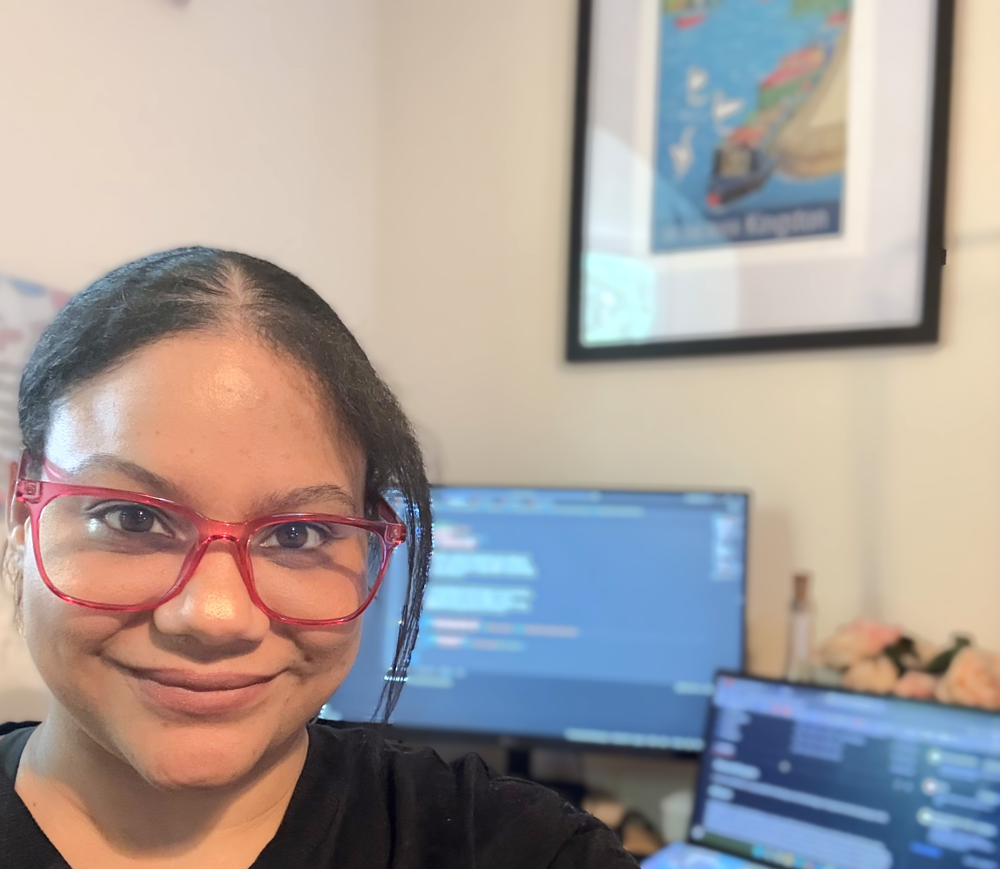
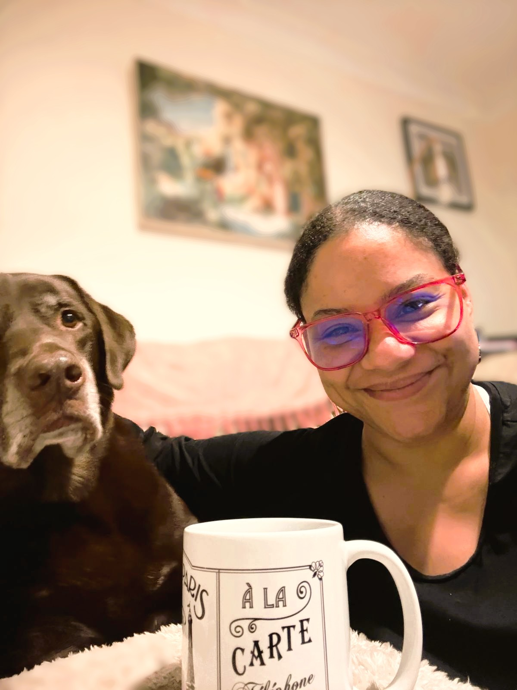

About Me
Thank you for visiting my portfolio! I'm Monica, a passionate web developer who specialises in e-commerce and has a love for creating beautiful and functional websites. With a background in both front-end and back-end development, I enjoy bringing ideas to life through code. My journey in web development started with a curiosity for how websites work, and it has since evolved into a fulfilling career where I get to solve problems and build engaging user experiences. When I'm not coding, you can find me exploring new technologies, taking part in hackathons, or taking time out with my dog, Max! I'm always eager to connect with fellow developers and collaborate on exciting projects!
Education
Full Stack Software Development Diploma
Code Institute | 2023 - 2025
Front End Plus Course
Learning People | 2025 – Present
Currently studying advanced front-end development techniques including React, TypeScript, and modern CSS.
Career Timeline
Freelance Web Developer
I partner with small businesses to take their ideas from a concept to a live, high-performing website. Whether I'm building a custom Django engine or a bespoke Shopify store, my focus is always on creating a site that actually works for the business - fast, easy to manage, and fully optimized for search.
Site Manager - (Consecutive Roles)
I ran the day-to-day operations for high-end London salon and wellness center, responsible for hitting financial targets, lead-generation marketing, and ensuring the client journey was flawless. While managing a team of staff and overseeing the business site.
Freelance Therapist
Alongside my other work, I have always maintained a freelance therapy practice working with clients on health and wellbeing. This work has given me a strong foundation in client relationships, communication and understanding people's needs. Skills that translate directly into building great user experiences.
Contact Centre Manager
A build from scratch role where I designed and launched the central contact centre for a rapidly growing clinic group. I built the systems, chose the tech, and used data to improve customer communications.